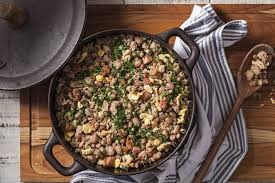
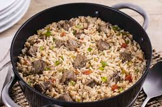
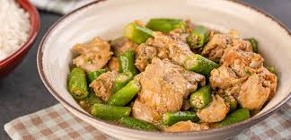

Venha conhecer o melhor restaurante de Sorocaba

Principais Itens do nosso cardapio
-
Feijão Tropeiro
Feijão carioca refogado com farinha de mandioca, linguiça, bacon, ovos e temperos tradicionais. Um clássico da culinária brasileira, servido bem quente.
-
Feijoada Completa

Feijão preto cozido lentamente com carnes selecionadas, acompanhado de arroz branco, couve refogada, farofa e laranja.
-
Arroz Carreteiro
Arroz preparado com carne bovina desfiada, alho, cebola e temperos caseiros, trazendo o sabor típico do sul do Brasil.
-
Moqueca de Peixe

Peixe fresco cozido com tomate, cebola, pimentão e leite de coco, finalizado com azeite de dendê e coentro.
-
Frango com Quiabo
Frango cozido lentamente com quiabo, temperos naturais e molho encorpado, uma receita típica da culinária mineira.
Self-Service
Valor imperdivel : R$7,50/100g
Delivery
Chega do trabalho e bate aquela preguiça para cozinhar ou até mesmo para ir até nossos
estabelecimentos?
Acesse o nosso ifood
Cardapio
Melhores opções já pronto para voce selecionar e chegar a sua mesa quentinho e saboroso
Rodizio
João Silva
★★★★★
Comida muito saborosa e bem temperada. O feijão tropeiro estava excelente e o atendimento foi rápido. Voltarei mais vezes.
Mariana Costa
★★★★☆
Ótima variedade no self-service, tudo bem organizado e limpo. Apenas achei o preço um pouco alto, mas vale a qualidade.
Carlos Almeida
★★★★★
Ambiente agradável e comida com gostinho caseiro. A feijoada é uma das melhores que já comi.
Fernanda Rocha
★★★★☆
Muito bom para almoçar durante a semana. Boa reposição dos pratos e funcionários educados.
Rafael Mendes
★★★★★
Excelente custo-benefício. Tudo fresco e bem preparado. Recomendo para quem gosta de comida brasileira de verdade.